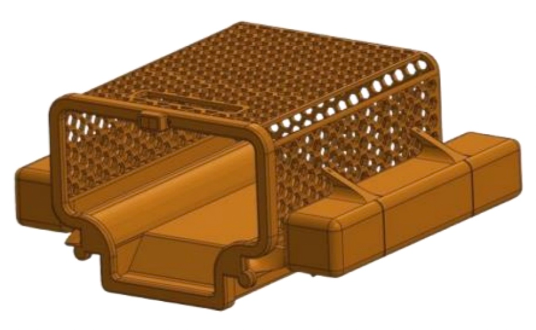
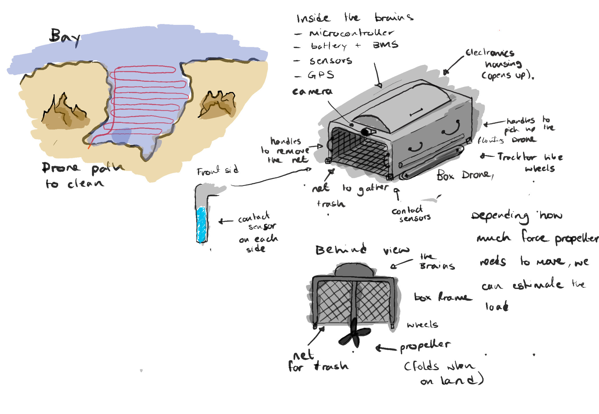
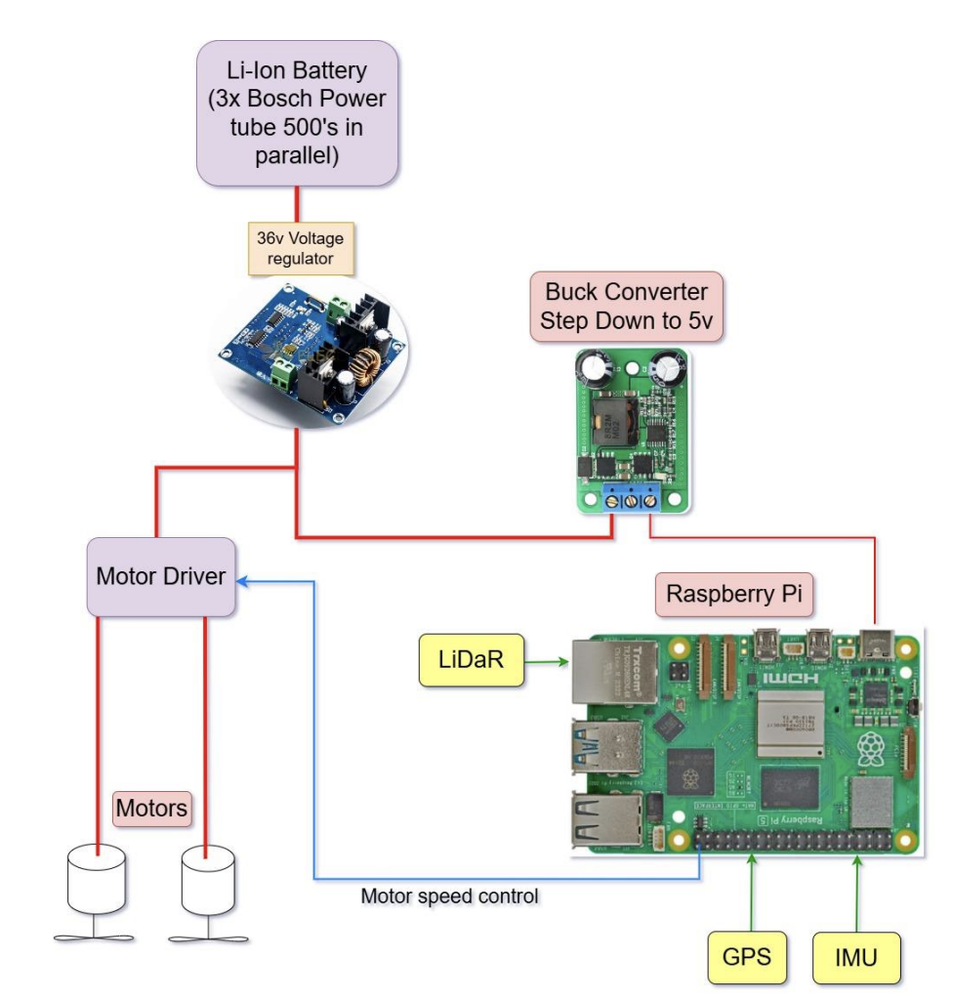
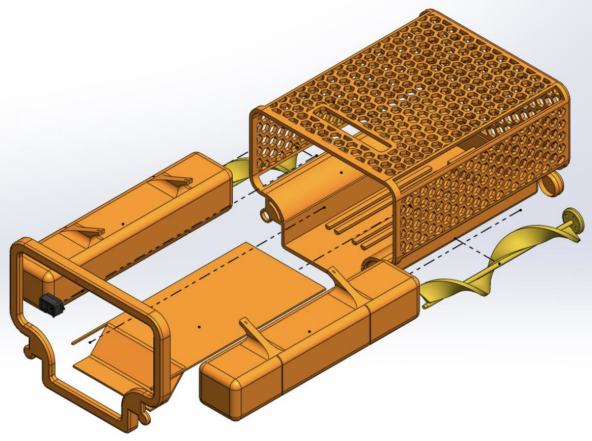

Project
KFC Bucket
Autonomous water drone for debris removal.
Project
Autonomous water drone for debris removal.
The Kleanup for Koastlines (KFC) Bucket is an autonomous surface drone designed to collect floating plastic debris from coastal and harbour environments, directly addressing UN Sustainable Development Goal 14 (Life Below Water). Developed by a team of six over one semester, the project took the system from concept through detailed design, simulation, and physical prototype.
The drone combines a custom HDPE hexagonal hull with dual brushless motor propulsion, a multi-sensor perception suite, and a fully autonomous navigation stack — capable of identifying debris, plotting an intercept course, and avoiding dynamic obstacles without any human input.


I originated the drone concept and led the systems integration effort. My contributions spanned sensor selection — evaluating GPS, IMU, and LiDAR options against range, weight, and power budget constraints — and implementing the full navigation software stack: waypoint sequencing, PI heading controller, and Dijkstra obstacle-rerouting logic. I also co-authored the power architecture and collaborated closely with teammates on the SolidWorks CAD assembly and wiring schematic.

I worked alongside Marcus Gatt to map out every power rail and signal path, selecting the step-down converter to reliably feed the Raspberry Pi and sensors, and routing the high-current lines to the motor driver for our dual-propulsion system.

Dave Cooper and I collaborated on the detailed SolidWorks model, defining part clearances for rapid assembly and ensuring each compartment aligned precisely for optimal buoyancy and easy maintenance in the field.